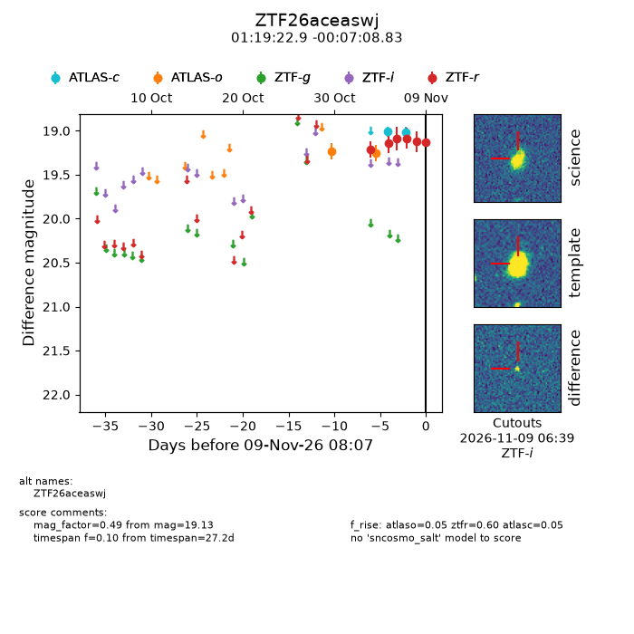
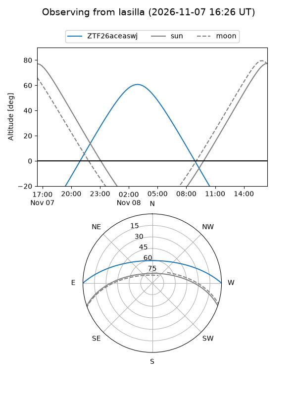
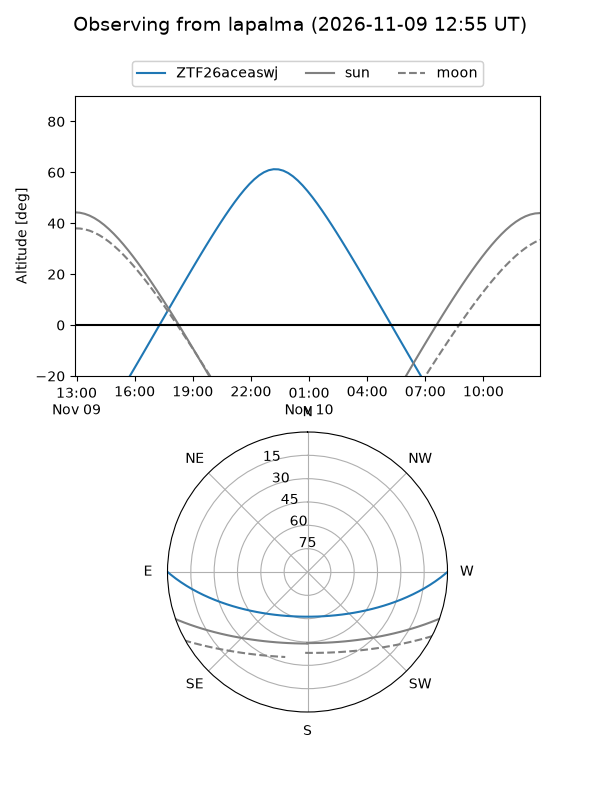
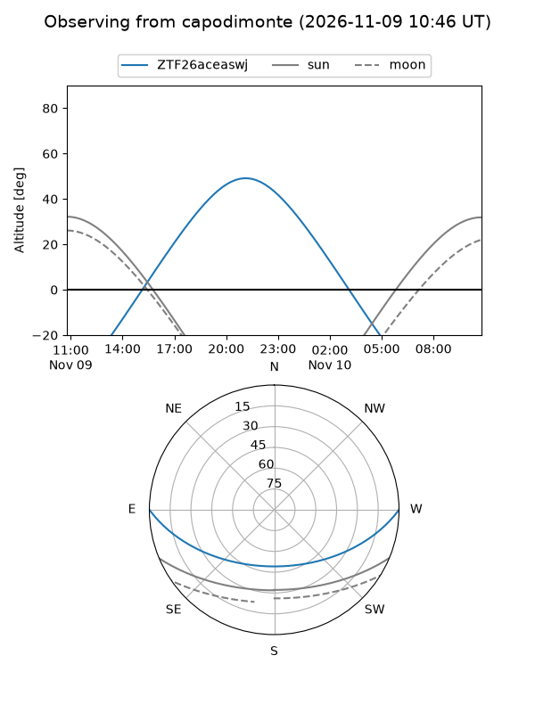
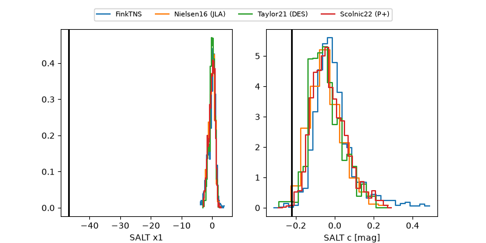

ZTF26aceaswj
Target ZTF26aceaswj at 2026-11-09 08:10
Aliases and brokers:
FINK-ZTF: ztf.fink-portal.org/ZTF26aceaswj
Lasair-ZTF: lasair-ztf.lsst.ac.uk/objects/ZTF26aceaswj
ALeRCE-ZTF: alerce.online/object/ZTF26aceaswj
Direct TNS query: direct search
alt names
ZTF26aceaswj (ztf,fink_ztf)
Coordinates:
equatorial (ra, dec) = 19.8454,-0.11912
equatorial (HMS+DMS) = 01:19:22.91,-00:07:08.83
galactic (l, b) = (138.0325,-62.16880)
Flags:
peak dt:
Photometry:
last atlasc=19.01, atlaso=19.25, ztfr=19.13
2 atlasc, 3 atlaso, 6 ztfr detections
Lightcurve

Visibility



Additional plots
